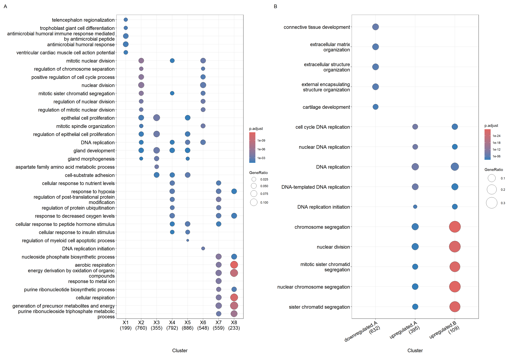
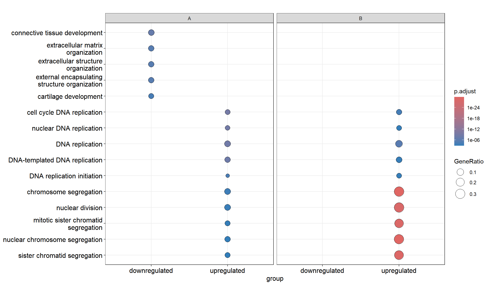

List of 8
$ X1: chr [1:216] "4597" "7111" "5266" "2175" ...
$ X2: chr [1:805] "23450" "5160" "7126" "26118" ...
$ X3: chr [1:392] "894" "7057" "22906" "3339" ...
$ X4: chr [1:838] "5573" "7453" "5245" "23450" ...
$ X5: chr [1:929] "5982" "7318" "6352" "2101" ...
$ X6: chr [1:585] "5337" "9295" "4035" "811" ...
$ X7: chr [1:582] "2621" "2665" "5690" "3608" ...
$ X8: chr [1:237] "2665" "4735" "1327" "3192" ...12 Biological theme comparison
The clusterProfiler package was developed for biological theme comparison (Yu et al. 2012; Wu et al. 2021), and it provides a function, compareCluster, to automatically calculate enriched functional profiles of each gene clusters and aggregate the results into a single object. Comparing functional profiles can reveal functional consensus and differences among different experiments and helps in identifying differential functional modules in omics datasets.
12.1 Comparing multiple gene lists
The compareCluster() function applies selected function (via the fun parameter) to perform enrichment analysis for each gene list.
Users can use a named list of gene IDs as the input that passed to the geneCluster parameter.
ck <- compareCluster(geneCluster = gcSample, fun = enrichGO,
OrgDb = org.Hs.eg.db, ont="BP")
ck <- setReadable(ck, OrgDb = org.Hs.eg.db, keyType="ENTREZID")
head(ck) Cluster ID
1 X1 GO:0021978
2 X1 GO:0060707
3 X1 GO:0061844
4 X1 GO:0019730
5 X1 GO:0086005
6 X1 GO:0061351
Description
1 telencephalon regionalization
2 trophoblast giant cell differentiation
3 antimicrobial humoral immune response mediated by antimicrobial peptide
4 antimicrobial humoral response
5 ventricular cardiac muscle cell action potential
6 neural precursor cell proliferation
GeneRatio BgRatio RichFactor FoldEnrichment zScore pvalue
1 4/199 13/18860 0.30769231 29.161191 10.488659 7.981530e-06
2 4/199 14/18860 0.28571429 27.078248 10.079785 1.108195e-05
3 9/199 135/18860 0.06666667 6.318258 6.403889 1.345178e-05
4 10/199 184/18860 0.05434783 5.150754 5.842684 2.659639e-05
5 5/199 38/18860 0.13157895 12.470246 7.308867 4.703787e-05
6 9/199 168/18860 0.05357143 5.077172 5.481560 7.544726e-05
p.adjust qvalue
1 0.01194966 0.01103518
2 0.01194966 0.01103518
3 0.01194966 0.01103518
4 0.01771985 0.01636378
5 0.02507118 0.02315253
6 0.02879290 0.02658943
geneID Count
1 PAX6/LHX2/EMX1/EMX2 4
2 SOX15/GJB5/PLK4/ELF5 4
3 CCL20/BPI/KNG1/PLA2G1B/CXCL3/CXCL8/H2BC11/CXCL5/MUC7 9
4 PI3/CCL20/BPI/KNG1/PLA2G1B/CXCL3/CXCL8/H2BC11/CXCL5/MUC7 10
5 SCN3B/KCNH2/KCND3/KCNE5/CTNNA3 5
6 NF2/PAX6/LHX2/FZD9/LHX5/EPHB1/EMX1/LEF1/EMX2 912.2 Formula interface of compareCluster
As an alternaitve to using named list, the compareCluster() function also supports passing a formula to describe more complicated experimental designs (e.g., \(Gene \sim time + treatment\)).
data(geneList, package='DOSE')
mydf <- data.frame(Entrez=names(geneList), FC=geneList)
mydf <- mydf[abs(mydf$FC) > 1,]
mydf$group <- "upregulated"
mydf$group[mydf$FC < 0] <- "downregulated"
mydf$othergroup <- "A"
mydf$othergroup[abs(mydf$FC) > 2] <- "B"
formula_res <- compareCluster(Entrez~group+othergroup, data=mydf,
fun=enrichGO, OrgDb = org.Hs.eg.db, ont="BP")
head(formula_res) Cluster group othergroup ID
1 downregulated.A downregulated A GO:0061448
2 downregulated.A downregulated A GO:0030198
3 downregulated.A downregulated A GO:0043062
4 downregulated.A downregulated A GO:0045229
5 downregulated.A downregulated A GO:0051216
6 downregulated.A downregulated A GO:0007178
Description
1 connective tissue development
2 extracellular matrix organization
3 extracellular structure organization
4 external encapsulating structure organization
5 cartilage development
6 cell surface receptor protein serine/threonine kinase signaling pathway
GeneRatio BgRatio RichFactor FoldEnrichment zScore pvalue
1 37/632 307/18860 0.12052117 3.596565 8.541020 1.602803e-11
2 35/632 331/18860 0.10574018 3.155474 7.366806 2.040034e-09
3 35/632 332/18860 0.10542169 3.145970 7.345591 2.209743e-09
4 35/632 333/18860 0.10510511 3.136523 7.324457 2.392722e-09
5 25/632 216/18860 0.11574074 3.453909 6.754047 7.258181e-08
6 37/632 446/18860 0.08295964 2.475663 5.872578 4.170243e-07
p.adjust qvalue
1 7.255888e-08 6.137891e-08
2 2.707963e-06 2.290716e-06
3 2.707963e-06 2.290716e-06
4 2.707963e-06 2.290716e-06
5 6.571557e-05 5.559002e-05
6 3.010653e-04 2.546768e-04
geneID
1 1281/4023/54360/582/7227/81029/3952/585/1513/79068/4488/6653/2202/85477/4856/7494/6097/7481/5159/1396/1289/116039/2690/8817/9658/7704/633/4487/658/2737/5744/2121/2487/1746/6935/3479/80310
2 2192/1281/10218/50509/4319/1290/25903/1513/7075/11096/4313/2621/2191/1471/11117/857/1289/3908/4016/83716/1296/4035/3249/1842/165/10631/1805/2331/3913/4982/7177/7049/2006/7373/10266
3 2192/1281/10218/50509/4319/1290/25903/1513/7075/11096/4313/2621/2191/1471/11117/857/1289/3908/4016/83716/1296/4035/3249/1842/165/10631/1805/2331/3913/4982/7177/7049/2006/7373/10266
4 2192/1281/10218/50509/4319/1290/25903/1513/7075/11096/4313/2621/2191/1471/11117/857/1289/3908/4016/83716/1296/4035/3249/1842/165/10631/1805/2331/3913/4982/7177/7049/2006/7373/10266
5 1281/54360/582/7227/81029/3952/1513/4488/2202/85477/4856/7481/116039/2690/8817/7704/633/4487/658/2737/5744/2121/2487/1746/6935
6 55198/6469/4681/4926/1281/2530/65997/11167/58495/1149/55273/51232/4488/6653/3625/91851/10468/3693/4856/7494/11117/857/4053/7041/4035/4487/658/2615/5654/2331/7043/6935/9863/2200/7049/7122/6424
Count
1 37
2 35
3 35
4 35
5 25
6 3712.3 Visualization of functional profile comparison
12.3.1 Dot plot
We can visualize the result using the dotplot() method.
dotplot(ck)
dotplot(formula_res)

The fomula interface allows more complicated gene cluster definition. In Figure 12.1(B), the gene clusters were defined by two variables (i.e. group that divides genes into upregulated and downregulated and othergroup that divides the genes into two categories of A and B.). The dotplot() function allows us to use one variable to divide the result into different facet and plot the result with other variables in each facet panel (Figure 12.2).
dotplot(formula_res, x="group") + facet_grid(~othergroup)

By default, only top 5 (most significant) categories of each cluster was plotted. User can changes the parameter showCategory to specify how many categories of each cluster to be plotted, and if showCategory was set to NULL, the whole result will be plotted. The showCategory parameter also allows passing a vector of selected categories to plot pathway of interests
The dotplot() function tries to make the comparison among different clusters more informative and reasonable. After extracting e.g. 10 categories for each clusters, clusterProfiler tries to collect overlap of these categories among clusters. For example, term A is enriched in all the gene clusters (e.g., g1 and g2) and is in the 10 most significant categories of g1 but not g2. clusterProfiler will capture this information and include term A in g2 cluster to make the comparison in dotplot more reasonable. If users want to ignore these information, they can set includeAll = FALSE in dotplot(), which is not recommended.
The dotplot() function accepts a parameter size for setting the scale of dot sizes. The default parameter size is setting to geneRatio, which corresponding to the GeneRatio column of the output. If it was setting to count, the comparison will be based on gene counts, while if setting to rowPercentage, the dot sizes will be normalized by count/(sum of each row). Users can also map the dot size to other variables or derived variables (see Chapter 16).
To provide the full information, we also provide number of identified genes in each category (numbers in parentheses) when by is setting to rowPercentage and number of gene clusters in each cluster label (numbers in parentheses) when by is setting to geneRatio, as shown in Figure Figure 12.1.
The p-values indicate that which categories are more likely to have biological meanings. The dots in the plot are color-coded based on their corresponding adjusted p-values. Color gradient ranging from red to blue correspond to the order of increasing adjusted p-values. That is, red indicate low p-values (high enrichment), and blue indicate high p-values (low enrichment). Adjusted p-values were filtered out by the threshold giving by the parameter pvalueCutoff, and FDR can be estimated by qvalue.
12.3.2 Gene-Concept Network
The cnetplot also works with compareCluster() result.
cnetplot(ck)
cnetplot() for comparing functional profiles of multiple gene clusters. Genes and functional categories (i.e., pathways) are encoded as pies to distinguish different gene clusters.
12.4 Summary
The comparison function was designed as a framework for comparing gene clusters of any kind of ontology associations, not only groupGO, enrichGO, enrichKEGG, enrichMKEGG, enrichWP and enricher that were provided in this package, but also other biological and biomedical ontologies, including but not limited to enrichPathway, enrichDO, enrichNCG, enrichDGN and enrichMeSH.
In (Yu et al. 2012), we analyzed the publicly available expression dataset of breast tumour tissues from 200 patients (GSE11121, Gene Expression Omnibus) (Schmidt et al. 2008). We identified 8 gene clusters from differentially expressed genes, and using the compareCluster() function to compare these gene clusters by their enriched biological process. In (Wu et al. 2021), we analyzed the GSE8057 dataset which contains expression data from ovarian cancer cells at multiple time points and under two treatment conditions. Eight groups of DEG lists were analyzed simultaneously using compareCluster() with WikiPathways. The result indicates that the two drgus have distinct effects at the begining but consistent effects in the later stages (Fig. 4 of (Wu et al. 2021)).
References
Schmidt, Marcus, Daniel B?hm, Christian von T?rne, Eric Steiner, Alexander Puhl, Henryk Pilch, Hans-Anton Lehr, Jan G. Hengstler, Heinz K?lbl, and Mathias Gehrmann. 2008. “The Humoral Immune System Has a Key Prognostic Impact in Node-Negative Breast Cancer.” Cancer Research 68 (13): 5405–13. https://doi.org/10.1158/0008-5472.CAN-07-5206.
Wu, Tianzhi, Erqiang Hu, Shuangbin Xu, Meijun Chen, Pingfan Guo, Zehan Dai, Tingze Feng, et al. 2021. “clusterProfiler 4.0: A Universal Enrichment Tool for Interpreting Omics Data.” The Innovation 2 (3): 100141. https://doi.org/10.1016/j.xinn.2021.100141.
Yu, Guangchuang, Le-Gen Wang, Yanyan Han, and Qing-Yu He. 2012. “clusterProfiler: An r Package for Comparing Biological Themes Among Gene Clusters.” OMICS: A Journal of Integrative Biology 16 (5): 284–87. https://doi.org/10.1089/omi.2011.0118.